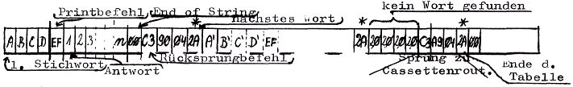
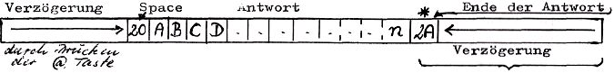

Nascom Journal |
3/81 |
Das Programm besteht in zwei Ausführungen, einmal mit Bildschirm, zweitens zum Anschluss eines Fernschreibers oder Druckers. Um komplizierte Änderungen zu vermeiden, habe ich beide Fassungen einzeln gelistet.
Bildschirmfassung
| Start Stichwörter und Antworten in Speicher laden | 04F3 |
| Start Antworten auf Cassette laden | 04C6 |
| Start Spiel | 0400 |
Die Adressen. 0C50 bis einschl. 0C53 dienen als Zwischenspeicher bei der Stichwortsuche. Soll dieser Speicher verschoben werden, müssen die Adressen im Programmteil 042F bis 0441 geändert werden. Soll der Beginn des Stichwort/Antwortspeichers verschoben werden, (im Progr. ist Speicherbeginn 0C54) so sind 0442 und 047F zu ändern.
Beim Verschieben des ganzen Programms sollen die unterstrichenen Adressen verändert werden.
Fernschreiberfassung
| Start Stichwörter laden | 051A |
| Start Antworten auf Cassette | 04ED |
| Start Spiel | 0400 |
Nach dem Ausdruck der Antwort kann sofort die nächste Frage gestellt werden.
Zum Verschieben des Stichwortspeichers gelten die gleichen Angaben wie oben, anstatt 04F7 ist aber 051E zu ändern.
in 04EA steht ein Sprung zu einer TTY Routine. Dazu kann das TTY-Unterprogramm des Einfach-Disassemblers aus Heft 6/7 80 verwendet werden, man kann es aber auch zum Ansprung eines anderen Fernschreiberprogramms umändern; diese muss aber mit einem Rücksprungbefehl C9 enden.
Falls ein Druckerprogramm aufgerufen werden soll, müssen natürlich die Baudot-Codes für Line Feed und Carriage Return in ASCII Codes umgewandelt werden. Diese Codes (0A und 0D) stehen an folgenden Adressen:
0491 0496 04D9 04DE 04E3
Noch ein Hinweis zum Speichern der Stichworttabelle: Wenn beim Eintippen in der Bildschirmfassung ein Fehler passiert, kann bequem mit Backspace korrigiert werden. Eine Korrektur der Fernschreiberfassung ist nicht möglich, da die Backspaces als / mit ausgedruckt werden.
Format der Stichwort/Antworttabelle
Antwortcassettenformat
| Seite 14 von 24 |
|---|